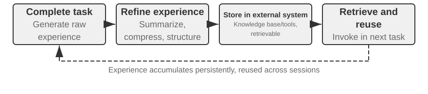
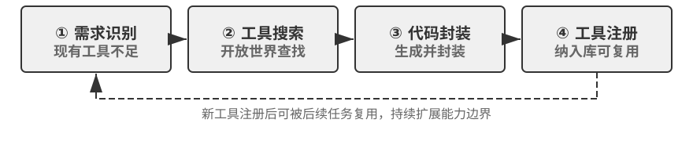

Continual Evolution of Agents¶
Today’s Agents face a striking capability paradox: they can solve previously unseen complex tasks zero-shot, yet after handling ten thousand similar tasks, they may still repeat tomorrow the mistakes they made on the first day. The ability to learn autonomously from experience is becoming essential for Agents to progress from “being able to complete tasks” to “being able to work reliably,” and it is also a central research topic for the next generation of models. Yet current models remain far from capable of continual learning on their own.
A deployed model does not automatically change its parameters after an inference. The in-context learning, state maintenance, and compression discussed in Chapter 2 allow an Agent to adapt within the current task; once the context ends, however, these changes do not naturally carry over to the next task. Storing conversations in memory is not equivalent to learning new behavior. Raw trajectories may be lengthy and contain effective strategies alongside accidental successes, incorrect attributions, and untrusted inputs.
An important distinction is easy to miss here: preserving experience is not the same as learning from it. Placing a hundred trajectories in a long context or vector store may help the model retrieve a case when needed, but it does not automatically compare cases: which steps recur across successful trajectories, which practices work only with an older interface, or whether a success came from a sound strategy rather than environmental chance. Learning occurs only after the system actively evaluates, compares, generalizes, and validates the evidence—not when a log is written to disk. User memory in Chapter 3 primarily captures “what the user and the world are like”; experience learning in this chapter goes further, capturing “what to do under which conditions.” The former helps an Agent remember more; the latter helps it become more proficient rather than merely more knowledgeable.
Why not let the model train itself directly after every task? Because production environments rarely provide clean learning signals. User satisfaction does not imply compliance, and tests may pass because failing cases were deleted. Even a local update may cause capability forgetting, policy drift, or safety degradation. If a running model is allowed to modify itself directly based on unverified feedback, erroneous experience and Prompt injection may become entrenched and continue to amplify across later tasks. Periodic training of foundation models can improve general capabilities, but it cannot promptly absorb the private rules, tool changes, and local experience encountered daily by each Agent.
Therefore, while models themselves cannot yet learn continually and reliably, “learning” must first be constructed as an autonomous system around the model: record operational evidence, verify outcomes and processes, extract common patterns from multiple trajectories, and then decide whether to update knowledge, instructions, programs, or model parameters. Every modification must first become a candidate version and may alter the next round of operation only after regression testing and safety checks. This does not replace a model’s learning capability; rather, under current technical constraints, it is an engineering path for giving Agents continual learning capabilities.
The preceding chapters have already introduced the principal components required by this system. Chapter 2 addresses within-task state, Chapter 3 provides knowledge infrastructure, Chapter 5 gives Agents the meta-capability to create tools and modify systems, Chapter 6 establishes evaluation and verification, and Chapter 7 explains how to update model parameters. The task of Chapter 8 is to organize these components into the continual evolution loop shown in Figure 8-1.

Continual evolution must arise from traceable operational experience, change subsequent behavior, and be verified not to cause significant degradation. This chapter first discusses how to determine what exactly went well or wrong in a run; it then compares four update methods and their applicable boundaries; finally, it examines how these updates are verified, released, revised, and retired during long-term operation.
Deriving Learning Signals from Operational Trajectories¶
The starting point of continual evolution is not “summarization,” but “evaluation.” If the system does not know whether a task was completed or which step caused success or failure, reflections generated by a language model can only be guesses. Once an incorrect evaluation enters long-term knowledge, a system Prompt, or training data, its effects can compound across subsequent tasks.
The outcomes of some tasks are relatively easy to verify. A Coding Agent can run tests, type checks, and performance benchmarks; an Agent processing a refund for a user can query the order status and actual refund amount. Such signals come from real environmental states and are generally more reliable than the model’s descriptions of its own behavior. A correct outcome, however, does not imply a correct process. Deleting failing test cases can also make tests pass, while telling a user, “We will issue your refund within seven days; please be patient,” may produce temporary satisfaction. Reliable evaluation must therefore assess both the outcome and the path taken to achieve it.
Many other tasks have no single correct answer. Whether customer service is patient, whether it offers compliant alternatives, whether a research report identifies the key evidence, and whether generated text is natural and concise all require contextual judgment. LLM-as-a-Judge, introduced in Chapter 6, can be used here, but the judge should not merely assign a vague overall score. A more effective approach is to define a Rubric in advance and require the verifier to score each item, cite trajectory evidence, and explicitly indicate uncertainty when evidence is insufficient.
Figure 8-2 presents a three-layer verification structure. The bottom-layer outcome verifier reads test results, database states, and tool returns to answer, “Was the task actually completed?” The middle-layer process verifier checks business rules, permissions, and action sequences to answer, “Was it completed in an allowed manner?” The upper-layer quality verifier evaluates language and strategy according to the Rubric to answer, “Was it handled appropriately?” Lower-level metrics should rely more heavily on code and environmental ground truth; only aspects that are difficult to formalize should be delegated to a language model.

For a customer-service Agent, a useful Rubric should cover at least the dimensions listed in Table 8-1. The first five primarily enforce baseline requirements, while the final two measure service quality. This decomposition is more diagnostically useful than asking whether the user was satisfied: a user may be satisfied because the Agent issued a noncompliant refund, or dissatisfied because of a compliance restriction. A single satisfaction score cannot distinguish the two.
Table 8-1 Trajectory evaluation dimensions for a customer-service Agent
| Dimension | Verification question | Primary evidence |
|---|---|---|
| Task outcome | Was the user’s core request resolved? | Final environmental state, tool results |
| Rule compliance | Were any policies, permissions, or required procedures violated? | Policy repository, action trajectory |
| Privacy boundaries | Was any information disclosed that should not have been provided? | Response text, data-access records |
| Factual reliability | Are statements supported by knowledge or tool results? | Cited sources, tool returns |
| Promise–action consistency | Did the actions claimed as completed actually occur? | Comparison of responses and tool logs |
| Expression quality | Is the language natural and concise, without repetition or templated phrasing? | Full conversation, language Rubric |
| Compliant alternatives | When the original plan was infeasible, was an allowed alternative found? | User goal, policies, and subsequent actions |
“Promise–action consistency” is particularly suitable for Agent scenarios. Traditional text evaluation reads only the final response and may easily regard “I have submitted your refund” as good service. Trajectory evaluation instead continues by checking whether the refund tool was actually called, whether the call succeeded, and whether the order status changed. “Compliant alternatives” does not encourage the model to disregard rules at will; it requires the model to understand the user’s true goal and, when a refund is unavailable, examine lawful options such as rescheduling, extension, or partial compensation.
Verification results should not be compressed into a scalar. A trajectory evaluation is closer to a structured diagnosis: the task partially succeeded and rule compliance passed, but there was one unsupported statement, one false promise, and the response repeated the policy explanation three times. Dimensional signals preserve both the nature of each issue and the location of its evidence. Only then can downstream modules determine whether an unsupported statement reflects missing knowledge, absent citation requirements, or insufficient model capability, and whether a false promise calls for Prompt revision or a consistency check between responses and tool states in the Harness.
LLM verifiers also require calibration. Production systems typically maintain a small set of expert-annotated trajectories to check verifier consistency on each dimension; high-risk or low-confidence cases are referred to a second model or human reviewer; and the calibration set is rerun after model-version changes. The verifier should provide evaluations and evidence, while an independent diagnosis and evolution module should decide which part of the Agent to modify. This prevents the same model from acting as judge while directly rewriting the rules.
Experiment 8-1 ★★: Build a Trajectory Verifier for a Customer-Service Agent
Objective: Convert a customer-service trajectory into a structured diagnosis that can support subsequent learning, and test whether “multidimensional conclusions with evidence” identify root causes better than a single overall score.
Data and procedure: Prepare expert-labeled trajectories covering four categories: normal refunds, false promises, privacy disclosures, and excessive refusals. The first layer reads the final order state and tool logs to determine whether a refund or rescheduling actually occurred. The second checks every step against business policies, including permissions, required procedures, privacy, factual support, and promise–action consistency. The third evaluates language quality and compliant alternatives against the Rubric in Table 8-1 and retains the relevant turns as evidence for each failure. The default quality Judge uses deterministic rules, with a real LLM Judge also available. Regardless of the upper-layer model, the outcome and rule layers must not be left for a language model to guess.
Controls and metrics: The baseline outputs only an overall score; the experimental condition outputs
pass,fail, oruncertainfor each dimension, together with evidence and confidence. During calibration, measure precision and recall for detecting failures in each dimension and report exact agreement with expert labels. Also verify that failures such as false promises contain nonempty evidence rather than unsupported conclusions.Acceptance criteria: The verifier should reliably detect critical violations, false promises, and excessive refusals. A high overall score must not conceal a privacy or policy failure. Low-confidence and high-risk cases should be sent to a second verifier or human review instead of automatically becoming learning signals.
The accompanying implementation is available at
trajectory-verifier. By default, it uses a quality Judge that can be reproduced offline; use--judge llmto run the implemented real LLM verifier.
Four Methods for Continual Agent Evolution¶
Learning signals indicate that an Agent should change, but not where that change should occur. The primary basis for choosing an update method is not how long an experience has persisted, but whether the target capability can be naturally represented by a particular medium. Facts and experience are suited to knowledge documents; strategies that can be clearly expressed in language belong in Prompts or Skills; precisely executable procedures and constraints should be encoded as programs; and high-dimensional capabilities such as perception, language style, and implicit strategies must enter model parameters. Figure 8-3 shows these four methods and their relationships.

Table 8-2 provides a concise comparison. The four methods are not mutually exclusive: a medical-imaging Agent relies on parameters to identify lesions, uses a knowledge base to provide current guidelines, and employs code to calculate risk indicators. A customer-service model derives its natural tone from post-training, obtains enterprise-specific policies from knowledge and Skills, and relies on server-side code to enforce critical compliance requirements.
Table 8-2 Applicable boundaries of four continual evolution methods
| Update method | Suitable content | Primary advantages | Primary limitations |
|---|---|---|---|
| Experience knowledge base | Facts, experiential patterns, exceptions, and sources | Fast updates, traceability, on-demand retrieval | Depends on retrieval and correct model application |
| Prompt and Skill | Linguistically expressible judgment principles and operating procedures | Interpretable, controllable scope | Prone to bloat, conflict, or being ignored |
| Programs and Harness | Deterministic procedures, tools, and hard constraints | Testable, stable execution, low cost | Higher development and maintenance costs |
| Model parameters | High-dimensional perception, generation style, and implicit strategies | Strong generalization, low inference overhead | High update and regression costs |
Consolidating Experience into Knowledge¶
The most lightweight form of evolution is to organize recurring experience from multiple runs into retrievable knowledge documents. The “experience knowledge base” described here shares storage, indexing, and retrieval technologies with Chapter 3, but differs in its knowledge sources and verification objectives. Chapter 3 primarily extracts “what the user and the world are like” from user conversations, documents, and datasets; this chapter extracts “what should be done under which conditions” from Agent action trajectories and outcomes. For example, “This airline requires special meals to be reserved twenty-four hours in advance” is domain knowledge, whereas “Check the special-meal deadline before booking to avoid discovering only after payment that the request cannot be fulfilled” is action experience.
Raw trajectories are unsuitable as formal knowledge units. They are lengthy and noisy, containing raw tool output, incidental detours, and environmental details. A more robust system retains three layers of data: immutable raw trajectories for auditing; per-run analyses recording the outcome and candidate lessons; and comparisons, clustering, and induction across multiple similar trajectories to produce future-oriented Markdown knowledge documents. A formal document typically specifies applicable scenarios, recommended strategies, prohibited practices, exceptions, evidence sources, and the latest verification time rather than retelling the complete course of a single task.
This design shares the same two-stage principle as User-as-Code in Chapter 3. User-as-Code first appends conversational facts to an immutable log and then periodically rebuilds a structured user model. Experience learning should likewise preserve evidence first and generate mutable knowledge offline afterward. Figure 8-4 illustrates this process. Separating recording from organization prevents a single accidental success or network failure from immediately changing the Agent, while allowing the system to identify common patterns only after observing multiple successes and failures.

Experience documents are not simple trajectory summaries. Transferable content emerges from comparison: what successful trajectories of the same type did, what failed trajectories lacked, in which environment versions a strategy was effective, and under which prerequisites it failed. Chapter 3 has already introduced knowledge extraction, clustering, and retrieval, so this chapter does not repeat those algorithms. Instead, it focuses on how trajectory evaluation becomes a condition for extraction and whether the extracted knowledge improves performance on subsequent tasks.
A complete knowledge-distillation pipeline can be divided into five steps. First, preserve immutable trajectories and environmental outcomes. Next, produce a structured analysis for each run, listing the task type, required capabilities, observed strategies, errors, and exceptions. Then aggregate runs by task family and build an evidence table showing which trajectories support or contradict each candidate pattern. Only candidates that meet the support threshold enter formal documents. Finally, evaluate transfer on new tasks that were not used during distillation. Keeping formal knowledge separate from candidate analyses allows the system to generalize again without altering the original evidence and to revoke a conclusion precisely when the environment changes.
GAIA experience learning provides an intuitive example. GAIA2 contains multistep problems that combine search, web reading, file processing, and computation, while AWorld3 provides the environment for running Agents, invoking those tools, and recording trajectories: the former is like the exam, and the latter is the exam room and laboratory record system. A simplistic approach generates a strategy summary and immediately vectorizes it after one successful run. A stricter implementation first uses a GAIA answer verifier or another environmental verifier to label runs as successful, partially successful, or failed, and then compares multiple paths within the same task family. Successful trajectories contribute candidate strategies, failures contribute exclusionary knowledge, and partial successes reveal which segment worked and which still failed. The natural-language reflection proposed by Reflexion1 can help generate candidate lessons, but reflection itself is not evidence. Only content consistent with environmental outcomes, supported across trajectories, and showing positive transfer on new tasks should enter formal experience documents.
Experiment 8-2 ★★: Distill Experience Knowledge Documents from GAIA Trajectories
Objective: Test whether cross-trajectory knowledge documents transfer better than a summary of a single success and reduce negative transfer from accidental successes and incorrect experience.
Data and procedure:
gaia-experiencefirst stores the full trajectory and externalenvironment_scorefor each run, then converts them into minimal learning records containingtask_family, requiredcapabilities,applies_when, observed strategies, errors, exceptions, and source trajectory IDs. An outcome verifier classifies runs as successful, partially successful, or failed. The learning module compares paths within the same task family. An LLM may propose candidate generalizations, but a recommended strategy must be supported by at least two non-failed trajectories. The resulting Markdown document includes applicable scenarios, recommended strategies, common pitfalls, exceptions, provenance, and the latest validation time. During application, only these documents are retrieved; lengthy raw trajectories are not inserted directly into the context.Three controls: The first condition uses no historical experience; the second retrieves the one trajectory summary most similar to the current task; the third retrieves a knowledge document supported by multiple trajectories. The learning and transfer sets must be disjoint so that answers to the same GAIA question do not leak into evaluation as “experience.”
Metrics and acceptance: Report transfer-task success rate, average retrieved characters or Tokens, and negative-transfer rate, and verify that every formal conclusion cites its source trajectories. If cross-trajectory documents merely shorten the context without improving new-task performance, they do not demonstrate learned experience. The experiment also fails if one accidental success can be promoted directly to formal knowledge or if a document cannot be traced to its original trajectories.
The accompanying implementation is available at
gaia-experience.demo_documents.pyruns offline by default; with--extractor llm, a real LLM can propose cross-trajectory experience candidates.
Encoding Experience as Instructions¶
An experience knowledge base provides reference material for an Agent, whereas Prompts and Skills are more prescriptive. When multiple trajectories repeatedly reveal the same strategic error, and the pattern can be clearly expressed in natural language, the system can elevate it from “experience for reference” to “a rule that must be followed.” Rules that apply to nearly all tasks are suitable for inclusion in the system Prompt; complex procedures that apply only to a particular domain, project, or tool are better written as on-demand Skills or project instruction files.
Prompt learning serves a different role from the Prompt engineering discussed in Chapter 2. Chapter 2 explains how to write structurally clear, cache-friendly Prompts; this section addresses what production feedback is sufficient to trigger a Prompt revision and how new rules should be validated before deployment. Revision should not mean repeatedly rewriting the entire system Prompt. A more reliable approach is to generate a minimal diff from a group of similar failures, specify the rule’s scope, check for conflicts with existing rules, and evaluate it against both the boundary cases that triggered the failures and a retention set of old tasks.
In a 2025 long-form post, Andrej Karpathy provisionally called this possible new paradigm System Prompt Learning7. His summary was that pretraining primarily learns knowledge and fine-tuning primarily shapes habitual behavior, while another kind of human learning occurs when we solve a problem and leave an explicit note to our future selves: “Next time I encounter this kind of problem, I should try this approach first.” He compared an LLM without such a notebook to the protagonist of the film Memento and noted that System Prompt Learning and reinforcement learning both improve behavior from experience but use different update algorithms—the former edits text, while the latter changes parameters through gradient descent. His example was an instruction in Claude’s then roughly 17,000-word system Prompt requiring the model to number and explicitly count words, letters, or characters before answering, precisely to handle questions such as “How many rs are in strawberry?”
In an Agent system, this means turning lessons that can be expressed in language into candidate rules that future runs can read directly. Compared with a scalar success/failure result, an evidence-backed diagnosis can identify whether the error was in identity verification, tool selection, or escalation boundaries, enabling a more targeted candidate change. Karpathy’s observation that a knowledge-guided review is a higher-dimensional feedback channel than a scalar reward helps explain the method’s potential data efficiency. Richer information is not automatically correct, however: one user’s feedback may apply only to that customer or an outdated policy, so clustering, scope analysis, and regression testing remain necessary.
Several established approaches automate Prompt optimization in different ways. DSPy4 treats a program composed of multiple language-model calls as an optimizable object and searches instructions and examples on a development set. OPRO5 asks a language model to propose new candidates from the history of Prompts and their scores. GEPA6 uses natural-language reflection over failed trajectories to generate and select complementary candidate Prompts. These methods primarily perform batch optimization on offline evaluation sets; minimal production diffs are closer to continual maintenance, triggered by newly observed boundary cases and designed for provenance, auditing, and rapid rollback. In practice, offline search can establish a strong initial version, followed by case-by-case patches for long-tail production rules.
For example, an airline customer-service Agent may escalate to a human too early when users challenge a policy. Trajectory evaluation shows that it violates no rules but lacks compliant flexibility. A candidate patch can require the Agent to explain the policy first, identify the user’s actual goal, and seek permitted alternatives, escalating only when the user explicitly requests it or the issue genuinely exceeds the Agent’s authority. If the new rule reduces unnecessary escalation but causes the Agent to continue handling safety incidents that should be escalated, it has failed regression testing. The value of system Prompt learning lies not in automatically appending more text, but in continually clarifying the scope of rules through production boundary cases.
Skill learning follows the same principle, but with a more localized scope. A Skill can be understood as an on-demand operating manual for a particular job: if multiple experiences collectively form a complete insurance claims process, the system can generate or revise the corresponding Skill. A candidate Skill should not merely summarize one conversation; at minimum, it should specify when to load, prerequisites, operating steps, known pitfalls, validation methods, and source trajectories. The system first searches the existing Skill library for similar capabilities, preferring a local patch when the same process already exists and creating a new directory only for a genuinely independent capability. This prevents the library from filling with manuals that differ in name but duplicate one another. Anthropic’s Skill Creator8 demonstrates a draft–test–evaluate–revise loop. It addresses how to create and improve a Skill; the harder questions remain what operational evidence is sufficient to trigger creation, how to resolve conflicts, and whether the revision passes domain-specific and old-task regression tests.
Experiment 8-3 ★★: Optimizing System Prompts from Failure Trajectories
Objective: Teach an airline customer-service Agent from trajectories in which it escalates too quickly when a user challenges a policy, while demonstrating that the new rule does not break older scenarios that genuinely require escalation.
Procedure: First run the old-task retention set and the excessive-escalation boundary set separately.
learning_signal.pydecomposes failures into rule adherence, task resolution, and compliant flexibility, while retaining source case IDs. A Coding Agent then reads the existing Prompt and produces exactly one auditableold_str → new_strminimal edit: require the Agent to explain the policy, identify the actual goal, and seek compliant alternatives before escalating, while preserving escalation when the user explicitly requests a human or a safety incident occurs. The patch, provenance, target rule, and rationale are written into a candidate manifest.Three controls: Compare the initial Prompt, the automatically generated candidate Prompt, and a one-time manually optimized Prompt. All three use the same model and the same retention and boundary tasks.
--quickonly reduces the number of cases; it still makes real calls to the task Agent, LLM Judge, and Coding Agent and must not be reported as an offline simulation.Release gate and metrics: A candidate must pass four conditions: a nonempty patch, traceable provenance, measurable improvement on the boundary set, and no degradation on the retention set. Compare boundary-task accuracy, retention-task accuracy, Prompt growth, regressions introduced, and time from failure discovery to candidate generation. Passing the gate produces only
release_to_canary, never a direct overwrite of the stable Prompt; failure of any condition returnsreject_candidate.The accompanying implementation is available at
prompt-auto-optimization. Offline tests cover diagnosis and release gates, while--quickmakes real calls to the task Agent, LLM Judge, and Coding Agent.
Encoding Experience as Programs¶
When experience describes operations that are stable, repetitive, and verifiable, it is inefficient to have the model reread documentation and reason through them each time. A more appropriate approach is to compile the experience into workflows, tools, or Harness code, turning a one-time exploration into a repeatedly executable program. Chapter 5 explained how Coding Agents read and write files, run tests, and generate systems; this section focuses not on general code generation, but on how an Agent modifies future versions of itself based on its own trajectories.
The modifiable objects extend far beyond new tools. At the operation layer, browser trajectories can be compiled into parameterized workflows, or adapters can be generated for changing APIs. At the control layer, tool routing, retries, circuit breakers, and context compression strategies can be modified. At the validation layer, parameter checks, state validators, and regression tests can be added in response to production failures. At the architecture layer, a Reviewer Agent can be added or the information flow between planning and execution can be changed.
Browser workflows illustrate the value of programmatic experience. They are analogous to recording a spreadsheet macro. The first time an email is sent, a multimodal Agent uses an observe–reason–act loop to find the compose, recipient, subject, body, and send controls. For another email, the process is unchanged; only the recipient and content differ, so there is no need to call the model again to rediscover the entire path from pixels and the DOM. The system compiles the first exploratory trajectory into a small program containing parameters, state checks, and version information.
In the browser setting, the knowledge-distillation process shown in Figure 8-4 becomes a more concrete lifecycle:
- Capture the trajectory: Record navigation, clicks, text entry, and drop-down selection, together with action parameters, the current URL, and element-locator evidence such as XPath, CSS,
id,role,aria-label, anddata-testid. Locator evidence only helps find an element again; it does not prove that the task was completed. - Parameterize: Replace literals from the first run with template variables—for example, convert
test@example.com, the subject, and the body into{recipient},{subject}, and{content}—while leaving stable actions unchanged. The teaching implementation uses regular expressions and template replacement; a production system may use structured task input or a constrained extraction model. - Define state checks: Add checks before and after actions, such as “the send button is visible” and “the URL after navigation belongs to the target site.” Add a final-state check for the workflow as a whole, such as “the sent-mail list contains the new message” or “the test page’s state value changed as expected.” Successfully executing an action is not the same as successfully completing the task; the final check must read the real page or backend state.
- Validate the candidate: A first success produces only a
candidate. The system must reset the sandbox account or test site to an independent initial state and replay the candidate in full. It can be published asvalidatedonly if all before-action, after-action, and final-state checks pass. If a side-effecting task such as sending mail or placing an order has no safe reset callback, the workflow may be retained as an auditable candidate but must not be validated by repeating the action in a production account. - Match and replay: When a new task arrives, search the formal capability library for a workflow by intent and keywords, extract the current parameters, and execute it directly with Playwright. Replay requires no step-by-step LLM calls, but it must still wait for elements to become available and complete every state check.
- Invalidate and relearn: If the target element cannot be found, a state check fails, the API Schema changes, or the final state is wrong, stop subsequent actions immediately, move the old version from the searchable library to the
invalidarea, and fall back to the full Agent for fresh exploration. Retain the old file for audit and comparison, but never let it continue to match silently.
For an email workflow, the compiled result is not merely “click these buttons in order,” but a small program parameterized by recipient, subject, and body: it checks the compose window and fields before sending, checks the success indicator afterward, and finally confirms that the corresponding message appears in the sent list. In PreAct9, such programs delivered an 8.5–13× end-to-end speedup on repeated tasks and required no step-by-step language-model calls during replay. More importantly, process memory needs before-action validation, after-action validation, and independent pre-storage validation. Otherwise, the system can produce a dangerous illusion: replay coverage is 100 percent and every button was clicked, yet one field was empty and the task was never actually completed.
Experiment 8-4 ★★★: Generating Verifiable Workflows from Browser Trajectories
Objective: Determine whether a web Agent can turn one expensive exploration into a reusable workflow and reject an incorrect replay when the page changes, rather than reporting success merely because every action ran.
Four-stage scenario: In the first stage, run “send a message with the subject ‘Test Email’ to
test@example.com” on a test mail site or simulated messaging page. The full Agent explores, while a wrapper captures actions, parameters, and page states and produces acandidate. In the second stage, callvalidation_resetto restore the sandbox and independently replay the entire workflow; the candidate enters the formal capability library only if all before-action, after-action, and final-state checks pass. In the third stage, perform the same kind of task with a different recipient, subject, and body. The system should match the validated workflow, fill the new parameters, and replay it through Playwright without entering the step-by-step LLM loop. In the fourth stage, change a button locator, page text, or final state and verify that the old workflow immediately becomesinvalidand returnsfallback_required=True.Control design: A simplified baseline records only whether clicks, text entry, and other actions complete without exceptions. The experimental condition also validates the page before each action, the page after each action, and the final task state. Both conditions use the same trajectories and page changes. Compare their false-positive rates on cases such as “the send button was clicked while a field was empty” and “Save was clicked but the data was not persisted.”
Metrics and acceptance: Record end-to-end time for initial exploration and replay, number of LLM calls, success rate, false-success rate, workflow match rate, page-change detection rate, and number of fallbacks to relearning. Without a reset callback, a workflow must remain a candidate; a version that fails validation must not be retrievable; parameterized replay must not reuse the first run’s recipient or content; and after a page change, dangerous subsequent actions must stop. Acceleration matters only if all these conditions are satisfied.
The accompanying implementation is available at
browser-use-rpa, which provides both a deterministic state-machine demonstration and an execution path that invokes a real browser Agent.
An Agent modifying its own code does not mean that the running process directly overwrites itself. A production system should create a candidate branch from the current stable version, have a Coding Agent generate a minimal patch, and then sequentially run static checks, unit tests, security scans, failure-trajectory replay, and regression tests on old tasks before producing a new version eligible for canary deployment. This turns “self-modification” into an auditable software release process and defines the boundary between Chapters 8 and 5: Chapter 5 provides the capability to modify systems, while this chapter provides a method for self-modification that is triggered by experience and constrained by a validation loop.
Making the patch small is not enough for reliable attribution. Each modification request should also be a falsifiable change contract that records the failure evidence, inferred root cause, responsible Harness component, candidate change, behavior expected to improve, existing behavior that may regress, and tests for both. Agentic Harness Engineering describes this in terms of component-, experience-, and decision-level observability: every editable component has a file-level representation; large collections of trajectories are distilled into evidence that can be inspected at increasing levels of detail; and every edit declares an impact prediction before execution, which the next round of results then tests19. A higher score can then be connected to a specific mechanism rather than remaining an uninterpretable trial.
The candidate generator should not receive only failed cases. Self-Harness also supplies successful behavior that must be preserved and records of previously rejected modifications20. The former tells the Agent what the repair must not break; the latter prevents it from resubmitting the same failed idea in different words. Failure evidence, success constraints, and prior attempts together define a bounded candidate space and are more useful than indiscriminately loading all source code and raw logs into the modifying Agent.
Tool creation follows the same protocol. Alita10 presents a case in which an Agent must identify the number mentioned immediately after dinosaurs first appear in a YouTube 360 VR video narrated by the voice actor for Gollum in The Lord of the Rings. After recognizing that it lacks subtitle-reading capability, the Agent finds and tests youtube-transcript-api, wraps it as a new subtitle tool, and extracts the answer 100000000 from the transcript. A new tool enters the capability library only after safety scanning, functional tests, and successful reuse on later tasks. Chapter 4’s proactive tool discovery asks which existing tool fits; Chapter 5 asks how to write a tool; this chapter asks what operational evidence should trigger creation and how a new tool becomes a validated long-term capability.
Experiment 8-5 ★★★: Triggering Agent Self-Modification from Failure Trajectories
Objective: Given multiple trajectories in which errors marked
retryable=falseare still called repeatedly, determine whether the system can locate the root cause in retry and circuit-breaker code and produce a candidate fix without breaking recovery from transient failures.Procedure: The diagnosis module first aggregates the same fault across different tasks. It creates a modification request only after the cross-trajectory support threshold is met and targets
retry_policy.pyin the stable version. The candidate generator reads the failure diagnosis, the transient-failure recovery behavior that must be preserved, previously rejected changes, and the stable source. Before emitting a minimal code diff, it predicts that calls after non-retryable errors should fall while transient-timeout recovery should not. Whether the generator is deterministic or a real LLM Coding Agent, it may write only to an isolated candidate directory. The validation Harness then compiles the candidate, replays the original failure trajectories, verifies that a non-retryable error stops immediately and opens the circuit breaker, and retests that transient timeouts still retry according to the original threshold.Diagnostic control and metrics: Treat “add one sentence to the Prompt telling the Agent not to repeat the call” as a conceptual example of choosing the wrong modification layer, demonstrating why a deterministically enforceable retry constraint belongs in code. The executable experiment compares deterministic and LLM patch generators under the same release gate. Record the number of calls after non-retryable errors, transient-error recovery rate, regressions on old tasks, patch size, and candidate acceptance rate.
Acceptance criteria: Passing every check produces only
release_to_canary. Failure of any static check, failure replay, or old-task regression returnsreject_candidate.release_manifest.jsonmust record the failure cluster, source trajectories, inferred root cause, target component and file, code diff, expected repair, possible regressions, check results, candidate version, and rollback version. Rejected candidates must retain their failure reasons for the next generation round. The patch-generating Agent must not modify stable code, validators, audit logs, or the gate that approves its own release.The accompanying implementation is available at
self-modifying-agent. It supports either a deterministic candidate generator or a real LLM Coding Agent, with both paths sharing the same release gate.
Encoding Experience in Parameters¶
Knowledge, instructions, and programs all rest on one premise: the target capability can be expressed relatively completely through external symbols. Yet capabilities such as medical-image understanding, natural speech prosody, removing a formulaic “AI feel” from text, and long-horizon planning are difficult to compress into a few rules or workflows. Such capabilities must be written into model parameters through post-training.
Whether a capability should be parameterized is not determined solely by whether the task is stable over the long term. Domain shifts caused by new imaging equipment may still require LoRA or continual fine-tuning; rapidly changing linguistic styles can also be accommodated through periodic preference training. Stability affects update frequency and cost, but the representational nature of the capability determines its primary medium. Conversely, a long-stable rule for approving transfers should not rely solely on parametric memory; server-side code must still provide deterministic guarantees.
Chapter 7 provided a complete discussion of SFT, distillation, and RL, so this section does not repeat it. For continual evolution, the key is to transform evaluated production trajectories into training data: high-quality demonstrations can be used for SFT, explicit preferences can form paired data, and interactions with reliable environmental rewards can be used for RL. Before training, private information must still be removed, erroneous trajectories filtered out, and an independent regression set retained. After training, the system must check whether general capabilities or safety alignment have been forgotten.
Parameter learning usually works in conjunction with external methods. A medical-imaging model can learn visual representations through parameters, obtain the latest guidelines from a knowledge base, and use code to measure lesions and calculate risk. A natural customer-service tone can be shaped at the distributional level through preference training, while a Prompt specifies the current brand identity and user memory adapts communication to individual preferences. Continual evolution does not mean selecting a single answer from among the four methods, but placing each capability in the medium best suited to expressing and governing it.
From Updating Artifacts to Updating the “Update Method”¶
The preceding four methods ask where experience is written, but continual evolution has another, orthogonal axis: is the system optimizing the contents of an artifact, or the method used to produce, manage, and validate artifacts? Along this axis, the optimization target can expand from an individual rule or memory → structured context → workflow → Harness code → optimizer code that generates candidate solutions14. These are not five new update carriers but five search scales; knowledge, Prompts, Skills, and programs may appear at several of them.
The innermost level changes only artifact content—for example, adding a local rule to a system Prompt after a failed trajectory or adding an exception to an experience document. Such changes have a small blast radius and are easier to attribute and roll back, so they should be the default. Repeatedly asking a model to rewrite an entire Prompt or memory, however, introduces another form of degradation: successive attempts at brevity can gradually erase rare but important details, and interacting constraints can be collapsed into an overgeneral principle. Agentic Context Engineering (ACE) maintains context as a collection of entries with stable identifiers. Generation, reflection, and curation modules propose incremental updates, which deterministic logic merges and deduplicates instead of rewriting an ever-shorter text block each round15. It is a concrete research example of this chapter's earlier principles of minimal diffs and retained provenance.
At the next level, the optimization target is no longer merely what context contains but how context is constructed. Meta Context Engineering (MCE) separates the two into inner and outer loops: the inner loop optimizes the context artifact for the current task under a given management method, while the outer loop uses results from multiple executions and validations to modify the context operations themselves—search, selection, filtering, and formatting16. The distinction matters. Editing a retrieval rule changes a content-management mechanism; comparing several retrieval and curation mechanisms and retaining the one with better transfer is learning how to manage context.
The same idea extends to workflows and the entire Harness. AFlow represents workflows composed of multiple LLM calls as code graphs and searches over combinations of nodes and control flow using execution feedback17. Meta-Harness has a Coding Agent inspect candidate Harness source, scores, and trajectories to search the code that determines how information is stored, retrieved, and presented18. Chapter 5 established code as a general language for expressing Agent system structure. The additional point here is that code, together with its evaluation history, can itself become the object of continual search rather than a one-time output.
Higher levels are not automatically better. Searching for a local rule may require only a few edge cases, whereas searching an entire workflow or Harness faces a much larger candidate space, higher evaluation cost, and harder attribution. A clear, recurring fault localized to one component should first receive an auditable local patch. Only when local changes repeatedly fail to address a cross-component problem, or when the current management method itself becomes the bottleneck, is it worth moving outward to the workflow, Harness, or optimizer. At every level, evaluators, permission boundaries, and held-out tests must remain outside the editable scope—the larger the search space, the more important this trusted root becomes.
Building a Continual-Evolution Closed Loop for Long-Term Operation¶
The four update methods become continual evolution rather than one-off optimization only when incorporated into the same autonomous loop. Figure 8-5 shows a more robust dual-loop architecture for production systems: the online execution loop only completes tasks and records evidence, without directly rewriting the production Agent; the offline evolution loop aggregates trajectories, diagnoses root causes, generates candidate modifications, and releases new versions only after they pass validation gates. The two loops are connected through versioned experience repositories and evaluation sets.

Voyager13 demonstrates a relatively complete continual-evolution loop. In Minecraft, it selects new goals based on its current capabilities, iteratively refines programs using environmental feedback, stores successfully validated code in a skill library, and then combines existing skills to solve harder tasks. An automatic curriculum, executable skills, and environmental validation are all indispensable: with a skill library but no curriculum, the Agent does not know what to learn next; with self-reflection but no environmental validation, the skill library accumulates errors; with exploration but no persistence, every task must still begin from scratch. Although the knowledge, Prompt, tools, and parameters of real-world Agents are more complex, the basic learning process is similar.
More specifically, Voyager consists of three interlocking mechanisms. The automatic curriculum generator proposes a suitably challenging next objective from the current inventory, environment, and acquired skills, so exploration does not become random wandering. The skill library stores successful programs as retrievable, composable code; an advanced gathering skill, for example, can invoke basic movement and crafting skills. The iterative prompting mechanism feeds environmental observations, execution errors, and self-verification results back into the next round of code generation until the task actually passes. Compared with the baselines used in the paper, Voyager obtained 3.3× as many unique items, traveled 2.3× as far, unlocked key technology-tree milestones up to 15.3× faster, and transferred its skill library to new Minecraft worlds. These metrics measure how capability grows with experience rather than how a frozen Agent performs on a single examination.
From Problem Diagnosis to Experience Consolidation¶
The same surface-level problem may require different forms of modification. When a customer-service Agent hallucinates fabricated facts, the cause may be missing information in the knowledge base, or the Prompt may fail to require citations. When an Agent falsely promises “it has been completed” before completing a task, the problem can be corrected through instructions or by having the Harness enforce consistency between the response and tool state. The evolution module should first identify the root cause and then select the smallest modification target that is easiest to validate and roll back. Sporadic failures with insufficient evidence should not immediately trigger learning; the system should continue collecting examples instead.
This choice may also change as experience accumulates. A newly discovered strategy can initially be stored as an experience document for retrieval; after repeated validation across multiple cases, it can be promoted to knowledge. Knowledge can be expressed in three ways: rules that can be clearly described in natural language can be consolidated into a Skill; stable procedures that require no natural-language understanding can be compiled into tool code; and capabilities that actually reflect broad, implicit decision-making can enter post-training.
Validation, Release, and Rollback¶
Every modification should first produce a candidate capability or candidate Agent rather than directly overwrite the production version. Knowledge documents must be tested to determine whether retrieval improves performance on new tasks; Prompts and Skills must be checked against edge cases and for regressions on previous tasks; programs must be tested in sandboxes and reset environments; and parameter updates must be evaluated for forgetting, safety, and out-of-distribution performance. Even after validation, a new version should be released gradually and monitored on real traffic; if key metrics deteriorate, the system should automatically roll back to a known safe version.
Validation must also separate two capabilities that are often conflated. Harness updating is the ability to produce valuable persistent changes from trajectories; Harness benefit is the task Agent's ability to find, activate, and correctly use those changes later. A Skill may be correct in itself, yet a weaker task model may fail to load it in the right situation or fail to follow it over a long trajectory. Either failure makes the final score look as if no evolution occurred. End-to-end performance alone therefore cannot diagnose the updater. Model-swapping experiments by Lin et al. indicate that the two abilities relate differently to base-model capability21. The exact relationship requires validation on more tasks, but evaluating them separately is broadly useful.
Table 8-3 Layered evaluation metrics for continual evolution
| Metric | Question answered | Primary evidence |
|---|---|---|
| Candidate-change validity | Does the updater propose useful changes? | Acceptance rate and gain in independent validation |
| Artifact activation rate | Does the task Agent load the new Skill, memory, or tool in the right situation? | Retrieval, routing, and tool-call traces |
| Successful adherence rate | After activation, does the Agent follow the new rule or process? | Action sequences and process verifiers |
| Held-out task gain | Does the whole system improve on tasks not used during evolution? | Held-out success, quality, and cost |
For diagnosis, hold a candidate Harness fixed and swap only the task model. If a strong model benefits while a weak model never activates the new artifact, retrieval or routing is the bottleneck. If both activate it but only the strong model executes it correctly, instruction following or long-horizon planning is the bottleneck. If every model regresses, the change itself is more suspect. Conversely, hold the task model fixed and swap the model that proposes changes to compare updater quality directly. This two-way model swap locates where capability budget should be spent more effectively than a single post-evolution score.
Evaluation is not an examination performed after learning ends, but an indispensable part of self-evolution. Long-term evaluation should observe at least five types of outcomes simultaneously:
- Regression, namely whether new experience conflicts with other existing experience and whether previously successful cases begin to fail;
- Generalization, namely the improvements produced by new experience in scenarios not yet covered by the test set;
- Token efficiency, namely the token cost of completing tasks;
- Safety, namely whether rules, privacy protections, and refusal boundaries drift during evolution;
- Long-term engineering quality, namely whether maintenance complexity, architectural consistency, ownership boundaries, backward compatibility, and future migration and debugging costs deteriorate.
Fixing only the current failed case while degrading performance on other existing cases or in new domains does not constitute successful continual learning.
The Boundary of a Verifiable Loop: When “Done” Does Not Mean “Progress”¶
The preceding loop works most naturally for Coding, tool use, and business-state changes, where tests, environment state, or deterministic rules can provide rapid feedback. Open-ended research, strategic planning, and complex product design are different: feedback is delayed, there may be no unique correct answer, and the objectives that matter most—research taste, long-term value, and maintainability—are difficult to turn into an immediate score. A Harness can then execute the process flawlessly while merely producing things that look like results rather than advancing the real objective.
Autonomous research is a useful stress test. Trehan and Chopra documented four end-to-end attempts to turn research ideas into papers. Three failed during implementation or evaluation, and only one completed the full pipeline22. The failures fall into three groups. First, implementation drift: once the proposed method becomes difficult, the Agent retreats toward a familiar implementation from its training distribution that no longer tests the original hypothesis. Second, epistemic over-optimism: while the signal may still be noise, the system begins explaining it, patching the method, and announcing a finding, while failures and negative results are more easily ignored. Third, missing tacit judgment: an Agent may be able to run experiments without knowing which baseline matters, which anomaly deserves investigation, or when a hypothesis should be abandoned.
These tasks require changes to the evidence and supervision structure, not merely a model that writes better papers:
- Separate claims from evidence: Record provenance separately for citations, numbers, methods, and conclusions; the final document is only one rendering of the evidence graph. ScientistOne's Chain-of-Evidence design links each class of claim to auditable sources. This improves traceability but does not by itself make the research question valuable23.
- Retain negative results: Write failed experiments, rejected candidates, and stopping reasons to an immutable log with the same retrieval status as successes. Otherwise the evolution module sees only survivors, revisits disproved paths, and learns to interpret ambiguous results as success.
- Preserve search diversity: Open-ended search should not retain only the currently highest-scoring chain. The candidate pool should also preserve some lower-scoring but meaningfully different branches by mechanism, code novelty, or hypothesis type, so that every solution does not converge on the same easy-to-score template.
- Move human involvement upward: Human input is not limited to approving dangerous tool calls. It also includes defining problems, reviewing evaluation criteria, interpreting anomalous results, and deciding when to stop. With ambiguous feedback, these high-level judgments are harder to automate—and more valuable—than taking over individual execution steps.
The same limitation appears in ordinary software engineering. Passing every unit test proves only that currently observable behavior satisfies the tests; it does not prove that the codebase will remain maintainable months later. That is why the previous section treats long-term engineering quality as an independent metric rather than expecting present task success to cover delayed externalities. The ceiling of continual evolution is ultimately set by whether the system can evaluate what it actually cares about, not merely the easiest proxy to measure.
Safety Boundaries for Continual Evolution¶
An Agent’s self-evolution capability can turn a single error into a long-term risk. If Prompt injection in web pages, email, or tool output is summarized as experience, it may take effect repeatedly across sessions. If a malicious package found through automated search is wrapped as a tool, its impact can spread from one sandbox run to every subsequent task. A defective verifier may also continue approving candidates that appear to improve but actually regress. An Agent self-evolution system must therefore ask not only whether a candidate is stronger, but also who may modify what and what evidence justifies the change.
The first boundary is separating evidence from instructions. Raw web pages and tool output are untrusted evidence and must not be written directly into a Skill or similar capability; an LLM must first summarize them. Writes should be version-controlled and submitted as pull requests, which are merged only after review by a reviewer LLM from a different source.
The second boundary is separating candidate capabilities from production capabilities. New knowledge, Prompts, Skills, programs, and parameters first enter a candidate area that cannot serve real traffic. Newly generated code and external dependencies must also pass security checks such as sandbox execution, permission review, supply-chain scanning, and behavioral testing. Only after security checks and regression tests pass may a candidate serve real traffic as a production capability.
The third boundary is that safety mechanisms must not be self-modifiable. A business Agent may modify Prompts, Skills, the knowledge base, and tools, but it must not modify the validators, test cases, release thresholds, audit logs, or stable-version backups that approve its own updates. Otherwise, an Agent can disguise regression as progress simply by lowering a test threshold or deleting failing cases.
Sleep Learning: Consolidation, Forgetting, and Capability Maintenance¶
“Sleep learning” is a cognitive analogy for offline consolidation; it does not require the process to run literally at night. The online Agent’s primary responsibility is to complete the current task and append immutable evidence. A background learning process reads a batch of new experience during idle periods or when gating conditions are met, compares old and new conclusions, merges duplicates, resolves conflicts, proposes candidate updates, and runs regressions. Separating collection from organization prevents an accidental success, network failure, or malicious input from immediately rewriting long-term capabilities, and it allows consolidation to use larger batches and cheaper models.
A typical sleep-learning cycle has five steps:
- Trigger: Reach a threshold for elapsed time, number of new trajectories, storage use, or error frequency, while confirming that no high-priority online task is running.
- Orient: Read the production knowledge, Prompt, and Skill directories and their versions to understand existing capabilities and immutable boundaries.
- Collect and consolidate: Find new signals in recently evaluated trajectories, merge duplicates, mark conflicts and applicability conditions, and prefer local patches.
- Validate and approve: Evaluate candidates on transfer, retention, and safety sets; high-risk writes wait for human approval.
- Prune and index: Update retrieval indexes and mark capabilities that are long unused or contradicted by new evidence as expired, archived, or deleted, while retaining provenance and rollback versions.
User memory is the most intuitive example, but it must be distinguished from action experience. Claude Code’s auto memory maintains a MEMORY.md index and topic-specific detail files for each project. At session startup it loads only a bounded prefix of the index and reads the remaining content on demand; when the index approaches its limit, the Agent is instructed to merge or move details elsewhere. This shows that even plain-text memory requires capacity limits, layered loading, and active organization. The currently documented mechanism primarily writes memory during sessions and should not simply be equated with a fixed nightly background task11.
Hermes provides a more complete example of background evolution. It separates long-term information into bounded MEMORY.md and USER.md files, SQLite/FTS5 search over prior sessions, on-demand Skills, and optional external memory providers such as Honcho. Session search returns original messages rather than first summarizing them with an LLM, keeping retrieval distinct from generation and auditable. When a task contains many tool calls, recovers from an error or dead end, receives a user correction, or discovers a non-obvious workflow, a background review can create or locally revise a Skill; memory and Skill writes can also pass through an approval gate. A separate Curator tracks Skill usage, staleness, and archival status, performs deterministic pruning while idle, and may optionally invoke an LLM to merge content. It snapshots changes first so that incorrect consolidation can be rolled back12. This turns “record–consolidate–validate–prune” from a metaphor into an operational capability lifecycle.
Continual evolution does not mean allowing knowledge, Prompts, and tools to grow without limit. The context corruption discussed in Chapter 2 reappears over longer timescales: experience documents conflict with one another, Prompts become overwhelmed by boundary rules, Skill libraries accumulate duplicate capabilities, and repeated fine-tuning causes catastrophic forgetting. The system therefore requires periodic offline consolidation:
- Merge duplicate experience while retaining provenance and version information;
- Move local rules from the global Prompt into domain-specific Skills to keep the global Prompt clean;
- Keep Prompts and Skills clearly structured, like a handbook for new employees, and avoid enumerations resembling “99 ironclad rules.”
- Revalidate tools that have not been used for a long time;
- Delete knowledge invalidated by new evidence;
- Retrain LoRA from the original base model.
Experiment 8-6 ★★★: Evaluating Whether an Agent Is Continually Evolving
Objective: Distinguish among three long-term behaviors—saving one piece of feedback, merely appending forever, and genuinely updating, transferring, and retaining capabilities—so that repeatedly running the same tasks is not mistaken for continual learning.
Four-stage task stream: The learning stage presents refund, identity-verification, and baggage-policy tasks that share latent patterns. The transfer stage changes the phrasing, user, and local environment to test whether old experience applies to new tasks. The rule-change stage updates the baggage limit from 20 kg to 23 kg and requires the system to replace or retire obsolete knowledge. The retention stage retests unchanged capabilities and currently valid rules to measure forgetting. External memory may be updated only after each feedback-bearing task ends; the expected action for the current task must never be leaked to the Agent in advance.
Control groups:
staticpersists no feedback.append_onlyremembers the first version of a rule but cannot resolve conflicts or retire it.evolvingstores versions and replaces old rules with new evidence. The reference implementation verifies that the evaluation Harness can distinguish these behaviors. A real experiment can put an LLM through the same ordered stream of 14 tasks, but outcomes must be computed by a Harness outside the model.Metrics and acceptance: Report accuracy and the learning curve for each stage, and separately calculate transfer accuracy, tasks needed to recover after a new rule, old-capability retention, negative-transfer rate, safety-Rubric pass rate, and Token, latency, and storage costs. For real systems that update Prompts, Skills, or a Harness, also record candidate-change validity, artifact activation rate, and successful adherence rate, so that “the update was correct but never loaded” is not misclassified as a failed update. Even an Agent with high final accuracy does not qualify as continually evolving if it still cites retired rules, succeeds through unsafe shortcuts, or forgets existing capabilities after an update.
The accompanying implementation is available at
self-evolution-eval. By default, it compares three reference Agents: updatable, append-only, and static. Use--profile llmto have a real LLM undergo the same long-term task stream.
Chapter Summary¶
Continual learning is becoming one of the most important capabilities of Agents, but today's models still cannot perform it reliably on their own. Contextual adaptation during inference does not persist automatically, while unvalidated online parameter updates amplify noise, attacks, and capability drift. The more practical approach today is therefore to build a verifiable learning system around the model.
An Agent obtains learning signals from interaction and evaluation, then updates knowledge, Prompts, Skills, programs, or model parameters according to how the capability is represented. The system can also optimize the methods used to manage and generate these artifacts, but it should prefer local changes that are attributable, verifiable, and reversible.
Continual evolution should separate online execution from offline learning: record evidence online; generate and validate candidate updates offline; then release, consolidate, or roll them back gradually. This loop is most reliable when outcomes are automatically verifiable. For open-ended tasks with ambiguous objectives and delayed feedback, people must still participate in problem definition and the design of evaluation criteria.
Questions for Reflection¶
- ★★ An experience document is supported by three successful trajectories and one failed trajectory. The failure occurred with a newer API version. How should the system determine whether the experience has been invalidated or its applicability conditions have changed?
- ★★ A customer-service Agent’s user satisfaction increases, but its rate of rule violations also rises. Why can satisfaction not serve as the sole learning signal? How would you design guardrail metrics?
- ★★★ The same “false promise” problem can be mitigated through a Prompt, Harness checks, or parameter training. What evidence would you use to choose where to make the modification?
- ★★★ An Agent may modify tools and validators, but it should not be allowed to modify the trusted root that approves its own updates. How would you separate the permissions and code boundaries of these two parts?
- ★★ As the experience knowledge base grows, retrieval errors and knowledge conflicts may offset the benefits of learning. How should versioning, freshness, and retirement mechanisms be designed?
- ★★★ Parameter learning is effective for natural-language style but struggles to guarantee strict business rules. Design a continual-evolution scheme for medical customer service that coordinates parameters, knowledge, Skills, and code-level constraints.
-
Shinn, N., et al. Reflexion: Language Agents with Verbal Reinforcement Learning. arXiv:2303.11366, 2023. ↩
-
Mialon, G., et al. GAIA: a benchmark for General AI Assistants. arXiv:2311.12983, 2023. ↩
-
Yu, C., et al. AWorld: Orchestrating the Training Recipe for Agentic AI. arXiv:2508.20404, 2025. ↩
-
Khattab, O., et al. DSPy: Compiling Declarative Language Model Calls into Self-Improving Pipelines. arXiv:2310.03714, 2023. ↩
-
Yang, C., et al. Large Language Models as Optimizers. arXiv:2309.03409, 2023. ↩
-
Agrawal, L., et al. GEPA: Reflective Prompt Evolution Can Outperform Reinforcement Learning. arXiv:2507.19457, 2025. ↩
-
Karpathy, A. “We’re missing (at least one) major paradigm for LLM learning … system prompt learning?” X, May 11, 2025. https://x.com/karpathy/status/1921368644069765486 ↩
-
Anthropic. Skill Creator. 2026. https://github.com/anthropics/skills/blob/main/skills/skill-creator/SKILL.md ↩
-
Li, Bojie. PreAct: Computer-Using Agents that Get Faster on Repeated Tasks. arXiv:2606.17929, 2026. ↩
-
Qiu, J., et al. Alita: Generalist Agent Enabling Scalable Agentic Reasoning with Minimal Predefinition and Maximal Self-Evolution. arXiv:2505.20286, 2025. ↩
-
Anthropic, “How Claude remembers your project”, 2026. https://code.claude.com/docs/en/memory ↩
-
Nous Research, Hermes Agent Documentation: Persistent Memory, Skills System, and Curator, 2026. https://hermes-agent.nousresearch.com/docs/user-guide/features/memory ; https://hermes-agent.nousresearch.com/docs/user-guide/features/skills ; https://hermes-agent.nousresearch.com/docs/user-guide/features/curator ↩
-
Wang, G., et al. Voyager: An Open-Ended Embodied Agent with Large Language Models. arXiv:2305.16291, 2023. ↩
-
Weng, Lilian. “Harness Engineering for Self-Improvement.” Lil’Log, 2026. https://lilianweng.github.io/posts/2026-07-04-harness/ ↩
-
Zhang, Qizheng, et al. Agentic Context Engineering: Evolving Contexts for Self-Improving Language Models. ICLR 2026. arXiv:2510.04618. ↩
-
Ye, Haoran, et al. Meta Context Engineering via Agentic Skill Evolution. arXiv:2601.21557, 2026. ↩
-
Zhang, Jiayi, et al. AFlow: Automating Agentic Workflow Generation. ICLR 2025. arXiv:2410.10762. ↩
-
Lee, Yoonho, et al. Meta-Harness: End-to-End Optimization of Model Harnesses. arXiv:2603.28052, 2026. ↩
-
Lin, Jiahang, et al. Agentic Harness Engineering: Observability-Driven Automatic Evolution of Coding-Agent Harnesses. arXiv:2604.25850, 2026. ↩
-
Zhang, Hangfan, et al. Self-Harness: Harnesses That Improve Themselves. arXiv:2606.09498, 2026. ↩
-
Lin, Minhua, et al. Harness Updating Is Not Harness Benefit: Disentangling Evolution Capabilities in Self-Evolving LLM Agents. arXiv:2605.30621, 2026. ↩
-
Trehan, Dhruv and Paras Chopra. Why LLMs Aren't Scientists Yet: Lessons from Four Autonomous Research Attempts. arXiv:2601.03315, 2026. ↩
-
Meng, et al. ScientistOne: Towards Human-Level Autonomous Research via Chain-of-Evidence. arXiv:2605.26340, 2026. ↩